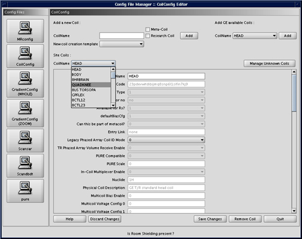
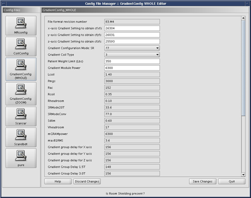

Illustration 3: Data Save/Discard Control Buttons

Illustration 3: Data Save/Discard Control Buttons
Illustration 4: Coil Config Page

| NOTE: | The MR Config File Manager should not be needed to configure the system. |
Illustration 5: Gradient Config (Whole)

Illustration 6: Gradient Config (Zoom)

Illustration 7: Scan

Illustration 8: Pure